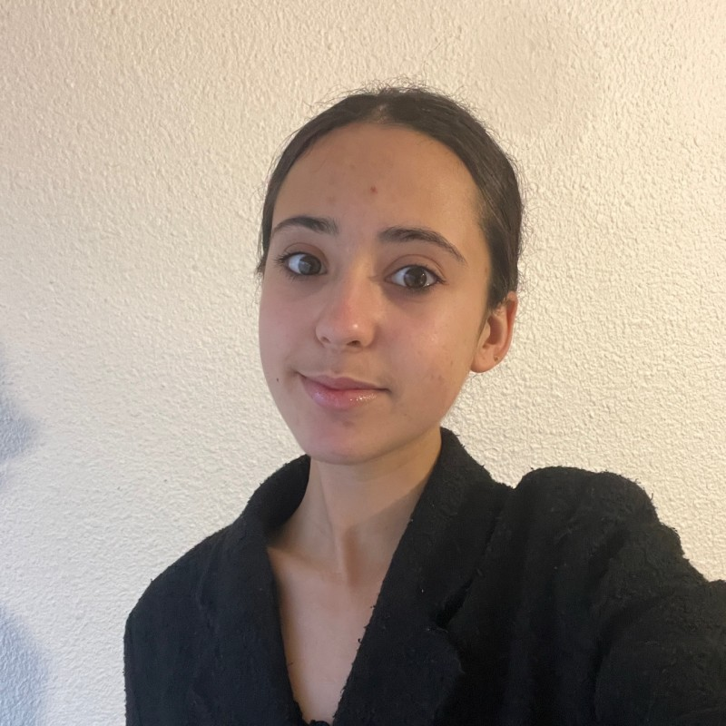

Rigoureuse curieuse et impliquée je développe mes compétences en comptabilité et finance. Je recherche une alternance pour ma 3ᵉ année de BUT à partir de 2027. Rigorous curious and involved I am developing my skills in accounting and finance. I am looking for a work-study program for my 3rd year starting in 2027. دقيقة فضولية وملتزمة أقوم بتطوير مهاراتي في المحاسبة والتمويل. أبحث عن برنامج دراسة وعمل لسنتي الثالثة بدءا من 2027.

Je m'appelle Hanine Landais j'ai 18 ans et je suis étudiante en 1ʳᵉ année de BUT GEA à l'IUT Grand Ouest Normandie de Caen. Avant cette formation j'ai obtenu un baccalauréat général mention Assez-Bien avec les spécialités Mathématiques et Physique-Chimie.
My name is Hanine Landais I am 18 years old and I am a 1st year BUT GEA student at the IUT Grand Ouest Normandy in Caen. Before this training I obtained a general high school diploma with honors majoring in Mathematics and Physics-Chemistry.
اسمي حنين لاندي عمري 18 سنة وأنا طالبة في السنة الأولى في إدارة الأعمال في معهد نورماندي في كان. قبل هذا التدريب حصلت على شهادة البكالوريا العامة بتقدير جيد مع تخصص الرياضيات والفيزياء والكيمياء.
« Les chiffres racontent des histoires — j'apprends à les lire. »
« Numbers tell stories — I am learning to read them. »
« الأرقام تحكي قصصا — أنا أتعلم قراءتها »
En 3ᵉ année je souhaite m'orienter vers le parcours GC2F et intégrer une entreprise en alternance. Très impliquée dans la vie lycéenne — CA CVL déléguée pendant 2 ans — j'aime prendre des responsabilités et m'investir collectivement.
In my 3rd year I wish to move towards the GC2F path and join a company for a work-study program. Very involved in high school life I enjoy taking on responsibilities and getting collectively involved.
في سنتي الثالثة أرغب في التوجه نحو مسار الإدارة المالية والاندماج في شركة كمتدربة. شاركت كثيرا في الحياة المدرسية وأحب تحمل المسؤوليات والمشاركة الجماعية.
Analyse de la Biscuiterie de l'Abbaye — fonctionnement ancrage territorial et actions RSE. Diaporama sonorisé en groupe de 4.
Analysis of the Biscuiterie de l'Abbaye — operation territorial anchoring and CSR actions. Sound slideshow in a group of 4.
تحليل شركة البسكويت — التشغيل التمركز الإقليمي وإجراءات المسؤولية الاجتماعية. عرض صوتي في مجموعة من 4.
Comptabilité complète d'une entreprise fictive sur 3 mois : factures journaux déclarations de TVA et gestion d'un salarié sur Sage.
Complete accounting of a fictitious company over 3 months: invoices journals VAT returns and employee management on Sage.
محاسبة كاملة لشركة وهمية على مدى 3 أشهر الفواتير المجلات المحاسبية إقرارات الضريبة على البرمجيات.
Présentation orale de 3 minutes filmée au CEMU. Discours structuré pour une demande de stage comme face à un vrai recruteur.
3-minute oral presentation filmed at the CEMU. Structured speech for an internship request as if facing a real recruiter.
عرض شفهي مدته 3 دقائق تم تصويره في المركز. خطاب منظم لطلب تدريب كما لو كان أمام مسؤول توظيف حقيقي.
Enregistrement des opérations tenue des journaux déclarations de TVA lettrage et équilibre des comptes sur logiciel professionnel.
Recording of operations keeping of journals VAT declarations matching and balancing of accounts on professional software.
تسجيل العمليات الاحتفاظ بالمجلات المحاسبية إقرارات ضريبة القيمة المضافة مطابقة وموازنة الحسابات على البرامج المهنية.
Analyse de documents financiers identification des éléments constitutifs d'un processus interprétation des résultats de gestion.
Analysis of financial documents identification of the constituent elements of a process interpretation of management results.
تحليل الوثائق المالية تحديد العناصر المكونة للعملية وتفسير نتائج الإدارة.
Situer une organisation dans son environnement analyser les parties prenantes identifier les enjeux RSE et processus internes.
Position an organization in its environment analyze stakeholders identify CSR issues and internal processes.
تحديد موقع منظمة في بيئتها تحليل أصحاب المصلحة وتحديد قضايا المسؤولية الاجتماعية والعمليات الداخلية.
Présentation orale structurée rédaction professionnelle travail collaboratif. Participation au débat S2 au CEMU.
Structured oral presentation professional writing collaborative work. Participation in the S2 debate at the CEMU.
عرض شفهي منظم كتابة مهنية وعمل تعاوني. المشاركة في المناظرة في المركز الجامعي.
Suite Office logiciels comptables professionnels outils de présentation et environnements numériques collaboratifs.
Office suite professional accounting software presentation tools and collaborative digital environments.
مجموعة أوفيس برامج المحاسبة المهنية أدوات العرض التقديمي والبيئات الرقمية التعاونية.
Bilingue Français et Arabe (Franco-tunisienne). Anglais niveau B1 (compréhension et expression écrite ou orale de base).
Bilingual French and Arabic (French-Tunisian). English level B1 (basic written and oral comprehension and expression).
ثنائية اللغة الفرنسية والعربية. مستوى اللغة الإنجليزية متوسط (الفهم والتعبير الكتابي والشفهي الأساسي).
Je recherche une alternance à partir de la rentrée 2027 dans les domaines de la comptabilité de la finance ou du contrôle de gestion. N'hésitez pas à me contacter ! I am looking for a work-study program starting in 2027 in the fields of accounting finance or management control. Feel free to contact me! أبحث عن برنامج دراسة وعمل يبدأ في 2027 في مجالات المحاسبة أو التمويل أو مراقبة الإدارة. لا تتردد في الاتصال بي!